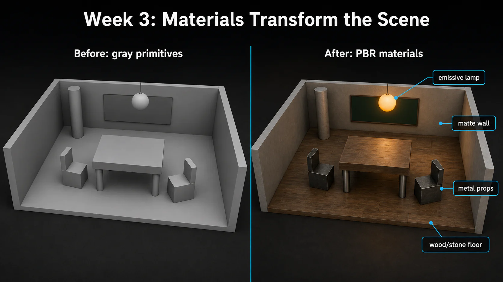

3주차 3교시 — 실습: 머테리얼 & 인스턴스 (학생용)
관련 문서
| 관계 | 문서 |
|---|---|
| 강의 계획서 | 강의계획서: Game Engine II |
| 1교시 교안 | 3주차 1교시: 머테리얼 기초와 PBR |
| 2교시 교안 | 3주차 2교시: 텍스처, 파라미터, 머테리얼 인스턴스 |
- PBR 머테리얼을 직접 제작하고 PBR 속성을 파라미터화할 수 있다
- 머테리얼 인스턴스로 서로 다른 재질 변형을 효율적으로 만들 수 있다
- Fab 마켓플레이스에서 Quixel 에셋을 다운로드해 프로젝트에 적용할 수 있다
1교시에서 PBR 핵심 속성 5가지를 배웠고, 2교시에서 텍스처, 파라미터화, 머테리얼 인스턴스까지 배웠습니다. 이제 직접 해볼 시간입니다.
실습 과제 안내
2주차에서 기본 도형으로 만들었던 공간을 기억하나요? 교실, 카페, 전시실 같은 회색 공간에 머테리얼을 입혀서 실제 표면처럼 보이게 만들어볼 것입니다. 마스터 머테리얼을 직접 만들고, 인스턴스로 변형해서 공간의 각 요소에 서로 다른 재질을 적용합니다.
완성 목표 — 2주차 씬이 이렇게 바뀝니다:
2주차에서 만든 공간이 완전히 달라집니다.
- 바닥은 Fab에서 받은 Quixel 텍스처(나무, 돌 등)가 깔려 사실적입니다.
- 벽은 콘크리트 느낌의 무광 머테리얼(M=0, R=0.9)이 적용됩니다.
- 테이블/선반 같은 소품은 금속 머테리얼(M=1, R=0.2)로 반짝입니다.
- 조명 오브젝트가 하나 있는데, Emissive로 주변에 빛이 번집니다.
- 모든 머테리얼이 하나의 마스터 머테리얼에서 인스턴스로 파생됩니다.

이미지: 2주차 회색 기본 도형 공간이 3주차 PBR 머테리얼 적용 후 달라지는 모습
예를 들어 교실을 만들었다면:
| 오브젝트 | 재질 | PBR 값 |
|---|---|---|
| 바닥 (Plane/Cube) | Fab Quixel 텍스처 (나무 바닥) | Fab MI 사용 |
| 벽 (Cube) | 콘크리트/페인트 | M=0, R=0.8~0.95 |
| 책상 (Cube) | 나무 또는 금속 | M=0~1, R=0.3~0.7 |
| 의자 다리 (Cylinder) | 금속 (크롬) | M=1, R=0.15 |
| 칠판 (Cube) | 무광 초록 | M=0, R=0.9, Color=짙은 초록 |
| 조명 (Sphere/Cube) | 발광체 | Emissive, Multiply B=200+ |
완성 기준 — 5가지:
| # | 조건 | 확인 |
|---|---|---|
| 1 | 마스터 머테리얼 M_Practice 생성, PBR 속성 4개 파라미터화 (Color, Metallic, Roughness, Tiling) |
□ |
| 2 | 머테리얼 인스턴스 3개 이상 생성 (서로 다른 재질) | □ |
| 3 | 2주차에서 만든 씬의 오브젝트에 인스턴스 적용 — 바닥, 벽, 소품 각각 다른 재질 | □ |
| 4 | Fab에서 Quixel 에셋 1개 이상을 바닥 또는 벽에 적용. 다운로드가 어려우면 자체 제작 MI를 하나 더 적용 | □ |
| 5 | 발광 오브젝트 1개 — Emissive가 적용된 조명 역할 오브젝트 배치 | □ |
제출 방법:
이번 실습은 별도 LMS 제출이 없습니다. 수업 시간 내에 완성하고 강사 확인을 받으세요. 프로젝트는 Ctrl + S로 저장해 두세요. 이후 주차에서 이어서 사용합니다. 2주차 씬이 없는 학생은 지금 바로 Cube/Sphere로 간단한 공간을 만들고 시작하세요.
단계 1 — Fab 에셋 다운로드 + 프로젝트 준비
Fab 에셋 다운로드는 시간이 걸리므로, 먼저 다운로드를 걸어놓고 단계 2를 병행하세요.
1-1. Fab 에셋 다운로드
작업 1 — Fab에서 Quixel 에셋 다운로드
- Content Browser 상단 툴바에서 [Fab] 버튼을 클릭하세요. → Fab 패널이 언리얼 에디터 안에서 열립니다.
- 검색바에서 카테고리 필터를 [Material & Textures]로 선택하세요.
- 검색어에
QUIXEL을 입력하고 Enter를 누르세요. → Quixel이 제작한 고품질 머테리얼 에셋 목록이 나타납니다. - 마음에 드는 에셋을 하나 선택하세요. (예: Mossy Ground, Trampled Snow 등) → 에셋 상세 페이지가 열립니다.
- 품질을 [High quality]로 선택하고 [Add to Project] 버튼을 클릭하세요. → 다운로드가 시작됩니다. 다운로드 중 단계 2를 진행하세요.
돌, 흙, 나무 등 자연 소재가 PBR 차이를 잘 보여줍니다.
1-2. 2주차 씬 열기
작업 2 — 2주차 레벨 열기
- File > Open Level (Ctrl+O) → Content > Maps 폴더에서 2주차에 만든 레벨(Week02_Scene 등)을 엽니다.
- 2주차 씬이 없는 학생은 지금 바로 Cube/Sphere로 간단한 방을 만드세요. → 바닥(Plane/Cube) 1개 + 벽(Cube) 2~3개 + 소품(Cube/Sphere/Cylinder) 3~4개면 충분합니다.
1-3. 폴더 구조 확인
작업 3 — Content 폴더 구조 확인
Content Browser에서 아래 폴더를 확인하세요. 없다면 지금 만드세요.
- Content > Lectures > 3Weeks > Materials/ — M_Sample이 있어야 함
- Content > Lectures > 3Weeks > Textures/ — T_Alpha가 있어야 함
단계 2 — 파라미터화 머테리얼 제작 (M_Practice)
마스터 머테리얼을 만들고 PBR 속성을 파라미터화하세요. 2교시에서 배운 방법을 직접 적용해보는 시간입니다.
필수 달성 조건 (먼저 이것부터!):
| # | 조건 |
|---|---|
| 1 | M_Practice 머테리얼 생성 (Materials 폴더 안에) |
| 2 | Base Color를 Constant3Vector로 만들고 파라미터화 (이름: Color) |
| 3 | Metallic을 Constant로 만들고 파라미터화 (이름: Metallic) |
| 4 | Roughness를 Constant로 만들고 파라미터화 (이름: Roughness) |
| 5 | Apply + Save 완료 |
아래 Emissive 도전 과제는 시간 여유가 있을 때 추가하세요.
도전 달성 조건 (여유 있으면 추가!):
| # | 조건 |
|---|---|
| 6 | Emissive Color용 색상을 Constant3Vector로 만들고 파라미터화 (이름: EmissiveColor) |
| 7 | Emissive 강도를 Constant로 만들고 파라미터화 (이름: EmissiveStrength, 기본값: 0) |
| 8 | Multiply 노드로 EmissiveColor × EmissiveStrength → Result Node의 Emissive Color에 연결 |
힌트 1: 머테리얼 생성은 어떻게 하나요?
- Content Browser에서 Materials 폴더로 이동하세요. → Content > Lectures > 3Weeks > Materials
- 좌측 상단 [+ Add] 버튼 클릭 → CREATE BASIC ASSET 섹션에서 [Material] 선택
- 이름을 “M_Practice”로 변경하세요.
- M_Practice를 더블클릭하여 머테리얼 에디터를 여세요.
힌트 2: Base Color 파라미터화
- 머테리얼 에디터 노드 그래프 빈 공간에서 키보드 [3] + LMB 클릭 → Constant3Vector 노드 생성
- 노드의 색상 사각형을 더블클릭 → Color Picker에서 원하는 색 선택 → 확인
- Constant3Vector의 흰색 출력 핀(●)을 드래그하여 Result Node의 [Base Color] 핀에 연결
- Constant3Vector 노드를 선택 → RMB(우클릭) → NODE ACTIONS 섹션에서 [Convert to Parameter] 클릭
- 좌측 Details 패널에서 Parameter Name을 “Color”로 변경
힌트 3: Metallic & Roughness 파라미터화
- Metallic: [1] + LMB 클릭 → Constant 노드 생성 (Value: 0.0) → 출력 핀을 Result Node의 [Metallic]에 연결 → 노드 선택 → RMB → [Convert to Parameter] → Parameter Name: “Metallic”
- Roughness: [1] + LMB 클릭 → Constant 노드 생성 (Value: 0.5) → 출력 핀을 Result Node의 [Roughness]에 연결 → 노드 선택 → RMB → [Convert to Parameter] → Parameter Name: “Roughness”
힌트 4: Emissive Color 파라미터화 (Multiply 구조)
- 색상 노드: [3] + LMB 클릭 → Constant3Vector 생성 → Color Picker에서 발광 색상 선택 (빨강, 주황 등) → RMB → [Convert to Parameter] → 이름: “EmissiveColor”
- 강도 노드: [1] + LMB 클릭 → Constant 생성 (Value: 0.0) → RMB → [Convert to Parameter] → 이름: “EmissiveStrength”
- Multiply 노드: [M] + LMB 클릭 → Multiply 노드 생성 → EmissiveColor 출력 → Multiply의 A핀 → EmissiveStrength 출력 → Multiply의 B핀 → Multiply 출력 → Result Node의 [Emissive Color]
- 상단 툴바에서 [Apply] 클릭 → [Ctrl+S]로 저장
주의: EmissiveStrength 기본값을 0으로 해두세요. 발광이 필요 없는 인스턴스에서는 0으로 두면 발광 효과가 꺼집니다.
완성된 노드 그래프 — 필수 파라미터 3개 상태:
노드 그래프 우측에 금색 테두리의 Result Node가 있고, 좌측에 파라미터 노드 3개가 연결되어 있습니다:
- 주황색 테두리 Vector Parameter
Color→ Base Color 핀 (색상 사각형 프리뷰 포함) - 초록색 테두리 Scalar Parameter
Metallic→ Metallic 핀 (초록빛 바와 Value 필드) - 초록색 테두리 Scalar Parameter
Roughness→ Roughness 핀
[Param: Color] (주황 테두리) ──→ Result Node: Base Color
[Param: Metallic] (초록 테두리) ──→ Result Node: Metallic
[Param: Roughness](초록 테두리) ──→ Result Node: Roughness도전 과제까지 완성한 노드 그래프:
필수 3개에 더해, Emissive 경로가 추가됩니다:
- 주황색 테두리 Vector Parameter
EmissiveColor→ Multiply 노드의 A핀 - 초록색 테두리 Scalar Parameter
EmissiveStrength(기본값 0) → Multiply 노드의 B핀 - Multiply 출력 → Result Node의 Emissive Color 핀
[Param: Color] (주황 테두리) ──→ Result Node: Base Color
[Param: Metallic] (초록 테두리) ──→ Result Node: Metallic
[Param: Roughness] (초록 테두리) ──→ Result Node: Roughness
[Param: EmissiveColor] (주황 테두리) ──→ Multiply (A)
[Param: EmissiveStrength] (초록 테두리) ──→ Multiply (B) ──→ Result Node: Emissive Color중간 점검
이 시점에 잠깐 멈추고 자신의 화면에서 아래 항목을 점검하세요.
확인 포인트:
- 파라미터 노드 이름이 올바른가? (Color, Metallic, Roughness 등)
- 모든 파라미터가 Result Node에 올바르게 연결되어 있는가?
- Emissive가 Multiply 구조로 되어 있는가?
확인이 끝나면 부족한 부분을 수정하면서 단계 3으로 넘어가세요.
단계 3 — 머테리얼 인스턴스 변형
M_Practice를 기반으로 머테리얼 인스턴스 3개를 만들어서 각각 다른 재질을 표현하세요. 금속, 플라스틱, 발광체 — 이 세 가지를 만들어봅니다.
3-1. 머테리얼 인스턴스 생성
작업 4 — 인스턴스 3개 만들기
- Content Browser에서 M_Practice를 우클릭하세요. → 컨텍스트 메뉴 맨 위에 [Create Material Instance]가 보입니다.
- [Create Material Instance] 클릭 → 머테리얼 인스턴스가 생성됩니다. → 이름을 “MI_Metal”로 변경하세요.
- 같은 방법으로 2개 더 생성: M_Practice 우클릭 → Create Material Instance → “MI_Plastic” / M_Practice 우클릭 → Create Material Instance → “MI_Emissive”
3-2. 재질별 파라미터 설정
각 인스턴스를 더블클릭하여 열고, 파라미터 체크박스를 켠 뒤 값을 조정하세요.
필수 파라미터 (모든 학생):
| 파라미터 | MI_Metal (크롬 금속) | MI_Plastic (빨간 플라스틱) | MI_Emissive (발광체) |
|---|---|---|---|
| Color | 밝은 회색 (R:0.8, G:0.8, B:0.8) | 빨간색 (R:1.0, G:0.05, B:0.05) | 주황색 (R:1.0, G:0.5, B:0.0) |
| Metallic | 1.0 | 0.0 | 0.0 |
| Roughness | 0.15 | 0.7 | 0.5 |
도전 파라미터 (Emissive를 추가한 학생):
| 파라미터 | MI_Metal | MI_Plastic | MI_Emissive |
|---|---|---|---|
| EmissiveColor | (변경 불필요) | (변경 불필요) | 주황색 (R:1.0, G:0.3, B:0.0) |
| EmissiveStrength | 0 | 0 | 200 |
MI_Emissive 대신 MI_Matte를 만들어보세요 — Color를 흰색, Metallic=0, Roughness=1.0으로 설정하면 분필/콘크리트 같은 무광 재질이 됩니다.
힌트 1: 인스턴스에서 파라미터 값을 어떻게 바꾸나요?
- MI_Metal을 더블클릭하여 머테리얼 인스턴스 에디터를 여세요.
- 우측 Details 패널에 Parameter Groups가 보입니다. → Color, Metallic, Roughness 등 파라미터화한 항목이 나열됩니다.
- 각 파라미터 왼쪽의 체크박스를 켜세요. → 체크박스가 켜져야 값을 변경할 수 있습니다.
- 값을 변경하면 좌측 프리뷰 구체에서 즉시 결과를 확인할 수 있습니다.
- 완료 후 Ctrl+S로 저장하세요.
힌트 2: MI_Metal — 크롬 금속 느낌이 안 나요
크롬 금속의 핵심:
- Metallic = 1.0 (이번 실습에서는 금속을 1로 설정)
- Roughness = 0.1~0.2 (매우 매끄럽게)
- Color = 밝은 회색 (너무 어두우면 금속 느낌이 약해요)
프리뷰에서 배경(Epic 본사 건물)이 선명하게 반사되면 성공!
힌트 3: MI_Emissive — 빛이 안 나요
발광 효과가 안 보이는 경우:
- EmissiveStrength 체크박스가 켜져 있는지 확인
- EmissiveStrength 값이 100 이상인지 확인 (200~500 추천)
- EmissiveColor 체크박스가 켜져 있고 검정색이 아닌지 확인
뷰포트에서 확인할 때: 발광 오브젝트 주변 바닥에 빛이 번지는지 확인하세요.
3-3. 2주차 씬에 적용
작업 5 — 인스턴스를 2주차 공간의 오브젝트에 적용
- 2주차 씬을 보면서 어떤 오브젝트에 어떤 재질을 넣을지 생각하세요. → Metallic/Roughness 조합을 떠올리세요!
- Content Browser에서 MI_Metal을 금속 느낌이 나야 하는 오브젝트에 드래그 앤 드롭 → 예: 의자 다리, 테이블 프레임, 문 손잡이
- MI_Plastic을 비금속 소품에 드래그 앤 드롭 → 예: 벽, 칠판, 책상 상판
- MI_Emissive를 조명 역할 오브젝트에 드래그 앤 드롭 → 예: 전등, 창문(발광), 장식 조명 → 씬에 조명 오브젝트가 없으면 Sphere나 Cube를 하나 추가하세요
- Fab에서 받은 Quixel MI를 바닥이나 벽에 드래그 앤 드롭 → 바닥에 나무/돌 텍스처를 깔면 분위기가 확 바뀝니다
- 드래그 앤 드롭 | 2. Details 패널 지정 | 3. Content Browser 선택 후 ← 화살표
적용 후 뷰포트에서 이렇게 보여야 합니다:
2주차에서 만든 회색 공간이 완전히 달라집니다.
- 바닥: Fab Quixel 텍스처(나무, 돌 등)가 깔려 사실적으로 변했습니다.
- 벽: 콘크리트/페인트 느낌의 무광 머테리얼이 적용되어 있습니다.
- 소품(테이블, 의자 등): 금속 부분은 반짝이고, 나무/플라스틱 부분은 무광입니다.
- 조명 오브젝트: Emissive로 밝게 빛나며, 씬 설정에 따라 주변 바닥에 빛 번짐이 보일 수 있습니다.
- 전체적으로 같은 공간인데 머테리얼만으로 완전히 다른 분위기가 되었습니다.
단계 4 — 마무리 및 씬 완성
4-1. Fab 에셋 최종 확인
작업 6 — 다운로드한 Fab 에셋 적용
- Content Browser에서 다운로드한 에셋을 찾으세요. → 경로 예시: Content > Fab > Megascans > Surfaces > [에셋명] > High
- 폴더 안에 MI_로 시작하는 머테리얼 인스턴스가 있습니다. → 이것을 뷰포트의 바닥(Plane)이나 벽(Cube)에 드래그 앤 드롭하세요.
- MI_ 에셋을 더블클릭하여 열어보세요. → Quixel이 만든 파라미터 구성을 살펴보세요. → Tiling, Saturation, Brightness 등 다양한 파라미터가 있습니다.
4-2. 씬 정리 및 저장
작업 7 — 씬 정리 및 레벨 저장
- 뷰포트에서 전체 씬이 잘 보이는 앵글을 잡으세요. → RMB + WASD로 카메라 이동 → 2주차 공간이 머테리얼로 얼마나 달라졌는지 비교해보세요!
- Outliner를 정리하세요. → 2주차에서 이미 폴더링이 되어있다면 그대로 사용해도 됩니다 → 새로 추가한 발광 오브젝트 등이 있으면 적절한 폴더에 넣으세요
- Ctrl + S로 레벨을 저장하세요.
빨리 끝난 학생을 위한 확장 과제
시간이 남으면 아래를 시도해보세요.
확장 과제 1 — 인스턴스 추가 생성:
- M_Practice에서 인스턴스를 2개 더 만들어보세요. → MI_Glossy: Metallic=0, Roughness=0.05 (광택 비금속) → MI_RustedMetal: Metallic=1, Roughness=0.9 (녹슨 금속)
- 뷰포트에 오브젝트를 추가하여 적용해보세요.
확장 과제 2 — Fab 에셋 파라미터 조작:
- 다운로드한 Quixel 머테리얼 인스턴스를 더블클릭하세요.
- Tiling 값을 바꿔서 텍스처 반복 횟수를 조절해보세요.
- Saturation(채도), Brightness(밝기) 값도 조정해보세요.
- 원본과 비교하며 변화를 관찰하세요.
확장 과제 3 — 텍스처 기반 마스터 머테리얼:
- M_Practice를 복제하여 M_Practice_Textured를 만드세요. → Content Browser에서 M_Practice 선택 → Ctrl+D (복제)
- Base Color의 Color 파라미터 대신 Texture Sample 노드를 연결하세요. → T + LMB → Texture Sample 생성 → 2교시에서 임포트한 T_Alpha를 지정 → RGB 출력 → Base Color
- TextureCoordinate + Multiply로 타일링도 추가해보세요.
흔한 문제
| 문제 | 원인 | 해결 |
|---|---|---|
| Convert to Parameter가 메뉴에 없음 | Multiply나 Texture Sample 같은 비-Constant 노드를 선택함 | Constant 또는 Constant3Vector 노드를 선택해야 함 |
| 파라미터 이름이 인스턴스에서 안 보임 | Apply/Save를 안 함 | 머테리얼 에디터에서 Apply → Ctrl+S |
| 인스턴스에서 값을 바꿔도 변화가 없음 | 체크박스를 안 켬 | 파라미터 왼쪽 체크박스를 클릭하여 활성화 |
| Emissive가 빛나지 않음 | EmissiveStrength 값이 너무 낮음 (1~10) | 100 이상으로 올려야 눈에 보임 (200~500 권장) |
| Fab 에셋이 Content Browser에 안 보임 | 다운로드 미완료 또는 경로 찾지 못하음 | Content > Fab 폴더 확인, 다운로드 진행률 확인 |
| Fab 다운로드가 작동하지 않음 | Epic Games 계정 미로그인 | Edit → Plugins → Fab 로그인 상태 확인 |
| 인스턴스가 뷰포트에 적용 작동하지 않음 | 드래그 위치가 오브젝트가 아닌 빈 공간 | 오브젝트 표면 위로 정확히 드롭 |
| 머테리얼 에디터와 인스턴스 에디터 혼동 | 두 에디터의 UI가 다름 | “노드 그래프가 있으면 머테리얼 에디터, 슬라이더만 있으면 인스턴스 에디터” |
완성 기준
이번 실습은 별도 과제 제출이 없습니다. 수업 시간 내 완성 여부를 확인합니다.
| 항목 | 기준 |
|---|---|
| 마스터 머테리얼 | M_Practice에 파라미터 3개 이상 (Color, Metallic, Roughness) |
| 머테리얼 인스턴스 | 3개 이상 생성, 각각 다른 재질 표현 |
| 씬 적용 | 뷰포트 오브젝트에 인스턴스가 적용되어 시각적 차이가 보임 |
| Fab 에셋 | 1개 이상 다운로드 및 씬 적용. 다운로드가 어려우면 자체 제작 MI 추가 적용 |